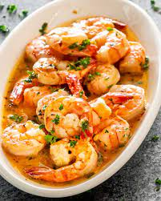

Garlic Butter Shrimp

Description
Garlic and butter. The two greatest pleasures in life. The two ingredients I could probably live off of for the rest of my life. And when you combine these two in a glorious shrimp skillet, well, it's nothing short of perfection.
- garlic
- butter
- shrimp
- olive oil
- parsley
- salt
- pepper
- de-shell shrimp
- mix together seasoning
- toss shrimp in seasoning
- add olive oil to pre-heated pan
- cook shrimp 1 min each side
- add butter to pan with shrimp left on side until butter melted
- add shrimp to butter sauce
- add parsley to buttery shrimpy goodness
- serve